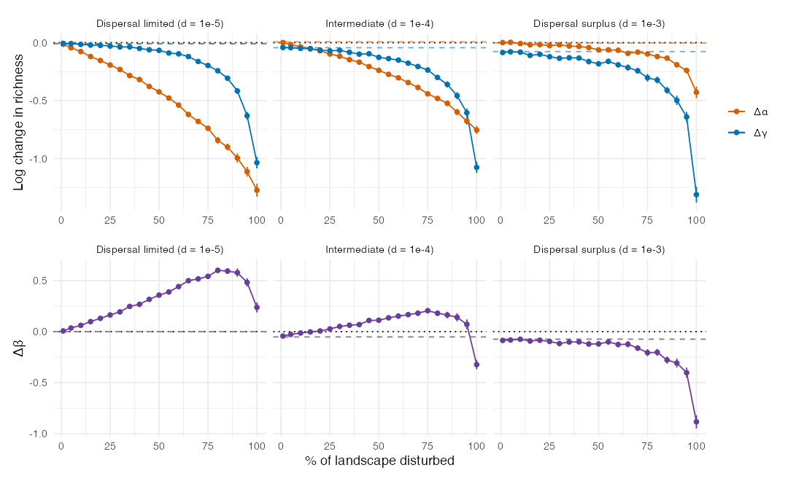
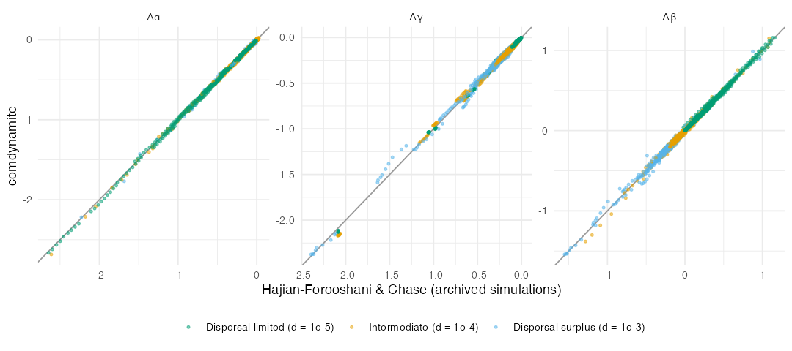
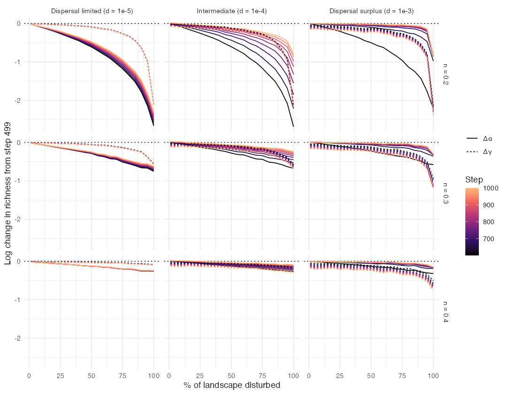

Replicating Hajian-Forooshani & Chase (2026)
Source:vignettes/articles/replication-disturbance.Rmd
replication-disturbance.RmdHajian-Forooshani & Chase (2026) asked why disturbance increases
beta diversity in some metacommunities and decreases it in others. They
added a single pulse disturbance to the model of Thompson et al. (2020):
for 100 time steps, the environment of a random set of patches falls
below the optima of all species, and then returns to its previous value.
Disturbance thus acts on growth rates through the niche, not by removing
individuals. Their central result is that dispersal sets the direction
of the change in beta diversity. In dispersal-limited metacommunities,
disturbed patches are slow to be recolonised, local richness falls more
than regional richness, and beta diversity increases (differentiation).
With a dispersal surplus, local richness recovers fast while species are
lost from the whole landscape, and beta diversity decreases
(homogenisation). At intermediate dispersal, the direction depends on
the extent of the disturbance and on niche breadth. Because their model
is that of Thompson et al. (2020), it is a special case of
simulate_metacommunity(), and the replication only needed a
way to write the pulse, env_pulse(). Like the replication of Urban & De Meester
(2009), this article is part of the nesting map of the package.
Translation of the model
The script data-raw/replication_hajian2026.R follows the
code archived with the article (Figshare, doi:10.6084/m9.figshare.30620603.v1), which fills in
parameters that the text does not give:
- 100 patches on a 10 × 10 grid wrapped as a torus, with the dispersal
kernel \exp(-0.1\,d), that is
landscape_grid(side = 10, disp_scale = 10, torus = TRUE); - 30 species with optima drawn from U(0.5, 1), r_{max} = 5 and a niche breadth n shared by all species. Their code computes
growth as r_{max}\exp(-((z -
e)/(2n))^2), so \sigma =
\sqrt{2}\,n in
growth_rates(), which uses \exp(-(z - e)^2/(2\sigma^2)); - intraspecific competition 0.5 \times
0.05 and interspecific coefficients drawn from U(0, 1) × 0.05, so
that the mean interspecific coefficient equals the intraspecific one;
the matrix is asymmetric and was passed as is, not built with
competition_matrix(); - the environment of each patch drawn from U(0.5, 1), without spatial autocorrelation;
- at step 500, a random 1 or 5% to 100% of patches set to an
environment of 0.1 for steps 500 to 600,
env_pulse(env, 1000, sites, start = 500, duration = 101, value = 0.1); - Poisson(1) individuals of every species in every patch at the start
and no later seeding (
seed_steps = numeric(0),seed_mean = 1), 1000 steps, and no extirpation, so the landscape is closed and regional richness can only fall; - local richness \alpha is the mean richness of all patches, disturbed or not, and regional richness \gamma that of the landscape; changes are log ratios relative to step 499, and \Delta\beta = \Delta\gamma - \Delta\alpha, the log ratio of Whittaker’s beta, as in the script of their Fig. 2.
We ran 100 replicates for each combination of niche breadth (0.2, 0.25, 0.3, 0.4), dispersal (10^{-5}, 10^{-4}, 10^{-3}) and extent (21 values), with a new landscape, species pool and competition matrix in each replicate.
Differences from their implementation
-
Redistribution of emigrants. Their code pools all
emigrants of a species and sends each one to a patch with probability
proportional to the expected inflow from the other patches, so an
emigrant can land back in its own patch. We used
immigration = "multinomial", which distributes the emigrants of each patch among the other patches by the kernel. Both conserve individuals. The kernel is nearly flat (two patches of the grid are at most 7.1 cells apart, and \exp(-0.71) = 0.49), so the difference should be small. - Article and code. The text calls n the standard deviation of the Gaussian niche and gives the disturbed environment only as below 0.5; the code uses ((z - e)/(2n))^2, a Gaussian with standard deviation \sqrt{2}\,n, and an environment of 0.1. We followed the code. With it, species with optima near 0.5 keep positive growth in disturbed patches at every niche breadth studied: with n = 0.2, a species with optimum 0.5 grows at r = 5e^{-1} = 1.8 at an environment of 0.1. The pulse therefore filters species by their optima, the “disturbance tolerant” species of the article, rather than emptying the disturbed patches.
- Replicates and kernels. The archived code runs 50 replicates per batch; their archived simulations have 100 per setting, as the legends say, for two dispersal kernels, \exp(-0.1\,d) and \exp(-0.5\,d). The script of their Fig. 2 uses the first, that of their Fig. 4 pools both. We compare with the first, which the article describes; the second gives nearly the same results.
Dispersal sets the direction of the change in beta diversity
The replication reproduces their Fig. 2 qualitatively (figure below, n = 0.25, 100 steps after the end of the pulse). In dispersal-limited metacommunities (d = 10^{-5}), local richness fell more than regional richness at every extent, and beta diversity increased, from \Delta\beta = 0.007 with one disturbed patch to 0.60 with 80% of the landscape disturbed. With a dispersal surplus (d = 10^{-3}), local richness recovered almost completely while regional richness kept falling, and beta diversity decreased at every extent, from -0.07 to -0.88 with the whole landscape disturbed. At intermediate dispersal (d = 10^{-4}), the direction depended on the extent, as in the article: beta diversity decreased slightly when 1–10% of the landscape was disturbed (-0.04 to -0.01), did not change at 15–20%, increased from 25% to 95% (up to 0.21 at 75%), and decreased again when the whole landscape was disturbed (-0.32).

Agreement with their simulations
Their simulations are archived with the code (Figshare, 106 MB), so
the replication can be compared setting by setting. The script
data-raw/compare_hajian2026.R summarises them in
data-raw/hajian2026_archived_summary.rds, and we matched
the 2268 combinations of niche breadth, dispersal, extent and step (601
and every 50 steps to 1000) shared with our runs. The mean changes
agreed closely: the correlations between their means and ours were 0.999
for \Delta\alpha and 0.998 for \Delta\gamma and \Delta\beta, the mean absolute differences
0.008, 0.011 and 0.014, without bias (mean differences below 0.001), and
94%, 96% and 95% of the differences lay within their 95% confidence
interval, as expected if both implementations sample the same model. For
example, with n = 0.25 at step 700,
half of the landscape disturbed and dispersal limitation, \Delta\beta was 0.365 in their simulations
and 0.358 in ours.

Recovery and niche breadth
Over the recovery phase (their Fig. 3), the replication also follows the article. Without recolonisation, dispersal-limited metacommunities kept the increase in beta diversity until step 1000. With a dispersal surplus, local richness regained most of its loss within 50 steps of the end of the pulse (with n = 0.25 and half of the landscape disturbed, from \Delta\alpha = -0.32 at step 601 to -0.09 at step 650), whereas regional richness kept falling, so beta diversity kept decreasing. At intermediate dispersal, niche breadth changed the outcome: at step 700, with half of the landscape disturbed, beta diversity increased with narrow niches (n = 0.2, \Delta\beta = 0.18), less with intermediate ones (0.07 for n = 0.3), and not with broad ones (-0.01 for n = 0.4). Losses with narrow niches grew nonlinearly with the extent, and with broad niches nearly linearly. With narrow niches and the whole landscape disturbed, the whole metacommunity went extinct in 2 of 100 replicates with d = 10^{-5} and 6 with d = 10^{-3}; these were left out of the means, as in their script of Fig. 3.

Regional extinctions during and after the pulse
Their Fig. 4 splits the change in regional richness into the part during the pulse, \ln(\gamma_{601}/\gamma_{499}), and the part after it, \ln(\gamma_{1000}/\gamma_{601}), which the article reads as transient extinctions that follow the disturbance. Both parts agreed with their simulations (figure below). During the pulse, losses grew nonlinearly with the extent and were larger with narrow niches; with n = 0.25 and 90% of the landscape disturbed, the change was -0.41 to -0.44 in both implementations at every dispersal rate. After the pulse, dispersal-limited metacommunities lost almost nothing (-0.004 to -0.02), whereas they kept losing species with intermediate dispersal (-0.05 to -0.14 up to 90% disturbed) and with a dispersal surplus (-0.09 to -0.18) and, with a dispersal surplus and the whole landscape disturbed, lost much more (-0.23 to -0.40 in ours, -0.29 to -0.33 in theirs).
![Log change in regional richness during the pulse (step 499 to 601, top) and after it (step 601 to 1000, bottom), against the percentage of the landscape disturbed, by niche breadth. Lines: comdynamite; open circles: the simulations archived by Hajian-Forooshani & Chase (2026), kernel \exp(-0.1\,d); means of 100 replicates. Dashed lines: the same changes without disturbance. Notice that after the pulse the disturbed metacommunities lose about as many species as the undisturbed ones, except with a dispersal surplus and most of the landscape disturbed.](hajian_fig4.png)
Not all of the homogenisation is caused by the disturbance
The smallest extent in the article is one patch of 100, so it has no control without disturbance. We added one (100 replicates per setting, with seeds of their own), and it shows that the metacommunities are not at equilibrium at step 499 when dispersal is intermediate or high. Without any disturbance, regional richness kept falling through competitive exclusion while local richness did not, so that beta diversity decreased by itself: with n = 0.25, \Delta\beta = -0.05 at step 700 and -0.12 at step 1000 with d = 10^{-4}, and -0.07 and -0.14 with d = 10^{-3}. With dispersal limitation it did not change (|\Delta\beta| < 0.005).
The effect of the disturbance is the difference from the control, as in a before-after-control-impact design. On that scale, at step 700 and with n = 0.25:
- with dispersal limitation, nothing changes, since the control is flat: the disturbance increases beta diversity at every extent, by up to 0.60;
- at intermediate dispersal, the disturbance increases beta diversity at every extent from one patch to 95% of the landscape (by 0.009 to 0.26), and decreases it only when the whole landscape is disturbed (-0.27). The homogenisation at small extents is background, so the dependence of the direction on the extent reduces to a reversal at complete disturbance;
- with a dispersal surplus, the disturbance adds less than 0.025 to the background decline until a quarter of the landscape is disturbed, about 0.05 at half, and 0.81 when all of it is.
The shift towards homogenisation over the recovery phase at intermediate dispersal (their Fig. 3b) also follows the background decline: by step 1000, the control alone has \Delta\beta = -0.12.
The same holds for the extinctions after the pulse (their Fig. 4, bottom row). Without any disturbance, regional richness fell from step 601 to step 1000 by -0.07 to -0.09 with d = 10^{-4} and by -0.10 to -0.13 with d = 10^{-3}, depending on niche breadth. With intermediate dispersal, the disturbed metacommunities lost about as much (-0.086 with n = 0.25 and half of the landscape disturbed, against -0.084 in the control); with a dispersal surplus, they lost 0.02 more than the control at half of the landscape, 0.05 more at 90%, and 0.30 more when all of it was disturbed (n = 0.25). The larger losses of broad-niche metacommunities after the pulse with a dispersal surplus are also mostly background: the control loses more with broad niches too (-0.13 with n = 0.4 against -0.11 with n = 0.2). The archived simulations have no control, but they match ours so closely that the same background decline is very likely present in them.
A longer burn-in before the pulse, or the difference from paired undisturbed runs, would separate the effect of the disturbance from the transient dynamics.
More replicates and a sweep of the pulse
The scripts in data-raw/blockB/ reran the design of
their Fig. 2 and the control with 500 replicates per setting and new
seeds, and swept the duration and severity of the pulse (the numbers are
in data-raw/blockB/README.md).
With 500 replicates (n = 0.25, step 700), the pattern above held. With dispersal limitation, beta diversity increased at every extent, up to 0.60 at 85% of the landscape disturbed, and with a dispersal surplus it decreased at every extent, from -0.08 to -0.93. At intermediate dispersal, it decreased with 0 to 10% of the landscape disturbed, did not change at 15% (95% interval -0.007 to 0.003), increased from 20% to 95% (up to 0.20 at 80%) and decreased at 100%, so the extent without change is 15% rather than 15 to 20%. The control confirmed the decline of beta diversity without disturbance at intermediate and high dispersal (-0.05 to -0.06 and -0.07 to -0.10 across niche breadths, at step 700). Relative to the control, disturbance with a dispersal surplus lowered beta diversity by less than 0.03 up to half of the landscape disturbed, and at intermediate dispersal it raised beta diversity at every extent from 5% to 95%, so the conclusions of the previous section hold.
The sweep crossed the duration of the pulse (10 to 400 steps), the disturbed environment (0.1 to 0.5), dispersal (10^{-5} to 10^{-1}) and the extent (1% to 100%), with 100 runs per setting and \Delta\beta measured 100 steps after the end of the pulse. Dispersal set the direction of the change whatever the pulse: beta diversity never decreased with dispersal limitation (139 of 150 settings positive, the others unchanged) and always decreased at 10^{-3} and 10^{-2} (150 of 150). At intermediate dispersal, the direction depended on the pulse: short and severe pulses increased beta diversity, and long and mild ones decreased it (with 40% of the landscape disturbed, from 0.09 for 50 steps at an environment of 0.1 to -0.10 for 400 steps at 0.4). This seems to follow from the background decline, which a long pulse leaves more time to accumulate before the measurement, and from the weaker filtering of a mild pulse. At 10^{-1}, the metacommunity was well mixed, and the change was zero in 97 of 150 settings and small where negative. The central result of Hajian-Forooshani & Chase (2026) is therefore robust to the duration and severity of the pulse except at intermediate dispersal, where they already reported that the direction depends on the conditions.
Summary
In short, comdynamite reproduces the model of Hajian-Forooshani &
Chase (2026) with env_pulse() and no change to its engine:
its mean changes are statistically indistinguishable from their archived
simulations, and all three of their figures are reproduced. The paired
control shows that the homogenisation they report at small extents and
intermediate dispersal, and most of the regional extinctions that follow
the pulse, come from the transient dynamics of the metacommunity rather
than from the disturbance. The differentiation under dispersal
limitation, the losses during the pulse, and the homogenisation and
extinctions after extensive disturbance with a dispersal surplus are
effects of the disturbance itself. These conclusions held with 500
replicates, and the direction set by dispersal held over pulses of 10 to
400 steps and of every severity studied, except at intermediate
dispersal.
References
Hajian-Forooshani, Z., & Chase, J. M. (2026). Disturbance interacts with dispersal and niche breadth to shape scale-dependent diversity change in metacommunities. The American Naturalist, 207, 838–850. https://doi.org/10.1086/739955
Thompson, P. L., Guzman, L. M., De Meester, L., Horváth, Z., Ptacnik, R., Vanschoenwinkel, B., Viana, D. S., & Chase, J. M. (2020). A process-based metacommunity framework linking local and regional scale community ecology. Ecology Letters, 23, 1314–1329. https://doi.org/10.1111/ele.13568